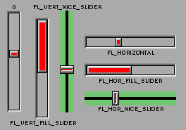

Class Hierarchy
Fl_Valuator
|
+----Fl_Slider
|
+----Fl_Scrollbar, Fl_Value_Slider
Include Files
#include <FL/Fl_Slider.H>
Description
The Fl_Slider widget contains a sliding knob inside a box. It
if often used as a scrollbar. Moving the box all the way to the
top/left sets it to the minimum(), and to the bottom/right to
the maximum(). The minimum() may be greater than the
maximum() to reverse the slider direction.

Methods
Creates a new Fl_Slider widget using the given position,
size, and label string. The default boxtype is FL_DOWN_BOX.
Destroys the valuator.
Returns
Fl_Scrollbar::value().
Set the type of box to draw for the moving part of the slider. The
color of the moving part (or of the notch in it for the nice sliders)
is controlled by selection_color(). The default value of zero
causes the slider to figure out what to draw from box().
Get or set the dimensions of the moving piece of slider. This is the
fraction of the size of the entire widget. If you set this to 1 then
the slider cannot move. The default value is .08.
For the "fill" sliders this is the size of the area around the end
that causes a drag effect rather than causing the slider to jump to the
mouse.
Setting this changes how the slider is drawn, which can be one of the
following:
- FL_VERTICAL - Draws a vertical slider (this is the
default).
- FL_HORIZONTAL - Draws a horizontal slider.
- FL_VERT_FILL_SLIDER - Draws a filled vertical slider,
useful as a progress or value meter.
- FL_HOR_FILL_SLIDER - Draws a filled horizontal slider,
useful as a progress or value meter.
- FL_VERT_NICE_SLIDER - Draws a vertical slider with a nice
looking control knob.
- FL_HOR_NICE_SLIDER - Draws a horizontal slider with a
nice looking control knob.